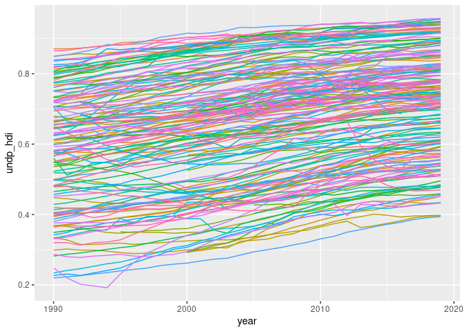

Download the latest and archived datasets from the Quality of Government Institute using the function read_qog(). See ?read_qog for help, package vignette for more examples and shiny.vaphana.com/rqog_app for interactive metadata shiny.
Use
Download data
Browse metadata
library(rqog)
meta_std_ts_2023[grepl("human development", meta_std_ts_2023$name, ignore.case = TRUE),]
#> code name value label class
#> 1416 iiag_hd Human Development NA <NA> numeric
#> 1875 undp_hdi Human Development Index NA <NA> numericPlot an indicator
library(ggplot2)
ggplot(dat[!is.na(dat$undp_hdi),],
aes(x = year, y = undp_hdi, color = cname)) +
geom_line() +
theme(legend.position = "none")
Copyright (C) 2012-2023 Markus Kainu markus.kainu@kapsi.fi. MIT-licence.